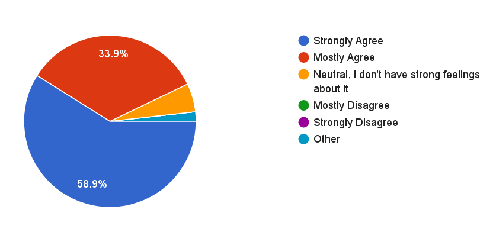
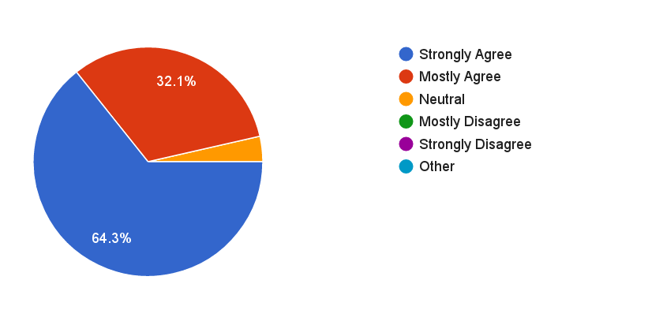
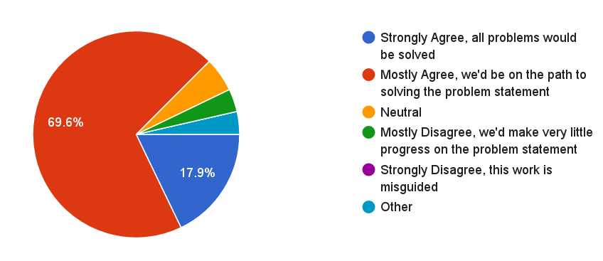
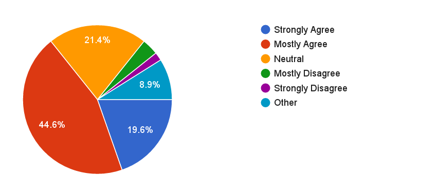
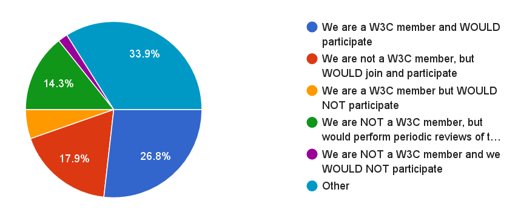

Demonstration of Support for Verifiable Claims Working Group
The Verifiable Claims Task Force performed a
survey
among 91 organizations to determine if the Verifiable Claims Working Group
proposal had industry support. The response rate to the informal review of the
Verifiable Claims work was 62% (high for an optional survey), with 56
organizations responding to the survey.
A summary of the findings follow, with detailed aggregate statistics for each
question and response throughout the rest of this document. Raw data is
available as
HTML and
CSV.
Summary of Findings
56 organizations responded (out of 91 that were polled).
93% supported the Verifiable Claims
Problem Statement and its accuracy.
96% supported the
Goals
proposed by the Verifiable Claims work and asserted that they were good
goals to pursue.
64% felt that their organizations use cases were
included in the highly focused list of use cases that the Working Group should
consider.
35 organizations said that they would actively participate in the work. The
breakdown of those organizations are:
17 W3C Members committed to participating in the work (out of around 40 that
were selected to be contacted).
10 organizations committed to joining W3C if the work was started.
8 organizations said that they would perform periodic technical reviews of the
work but would not join W3C (due to budget/bandwidth concerns).
Negative Responses to the Work (in general)
3 large multinational for-profit corporations with revenues in the multiple
billions of dollars per year in revenue stated that the work should be
incubated further before entering the standardization process.
A few individuals noted that
they were concerned
about the general area of the work.
Positive Responses Categorized by Organizational Size
16 large multinational for-profit corporations with multiple billions of dollars
per year in revenue responded positively to the charter.
10 large trade associations / standardization groups, several with hundreds
of members and tens to hundreds of billions of dollars in collective
revenue, responded positively to the charter.
27 small organizations with less than 250 employees responded positively to
the charter.
Problem Statement

The Verifiable Claims Problem Statement is Accurate
Goals

The Goals proposed by the Verifiable Claims work are good goals to pursue
Scope of Work

The Scope of Work and Deliverables would help address the Problem Statement
Use Cases

My organizations verifiable claims problems would be addressed if the use cases in the Use Cases document were addressed
Participation

My organization would participate in the following way if a Verifiable Claims Working Group were to materialize at W3C
Reasons for Not Participating
If your organization would NOT participate, what changes would we have to make to the draft charter to change your mind?
Suggestions
Is there any other input that you have on the Verifiable Claims Draft Charter?